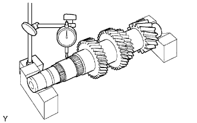
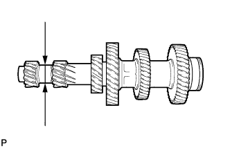
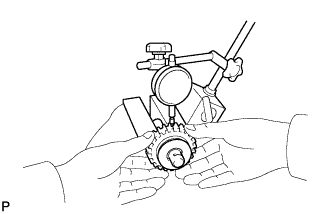

COUNTER GEAR AND REVERSE IDLER GEAR > INSPECTION |
| 1. INSPECT COUNTER GEAR |
 |
Using a dial indicator and 2 V-blocks, measure the shaft runout.
 |
Using a micrometer, measure the journal diameter.
| 2. INSPECT REVERSE IDLER GEAR |
 |
Using a dial indicator, measure the reverse idler gear radial clearance.